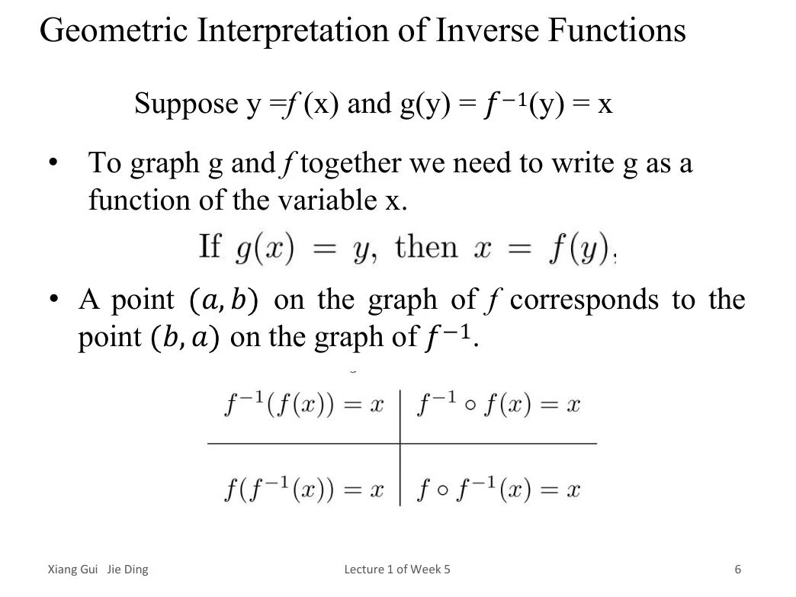
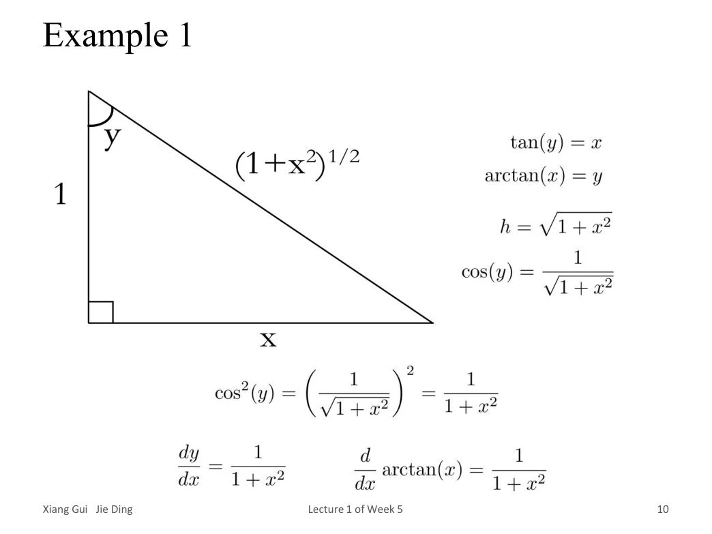

HDD4010 工程数学 I · 第 05 / 08 讲
第 3 章 · 反函数、指数与对数
Inverse Functions, Exponential and Logarithmic Functions
所属章节：第 3 章 超越函数与极限技巧
资料来源 · 2 项 / 已附 0 项
Topic 5/EMI_Week5_Lecture1.pdf未附原文件Topic 5/EMI_Week5_Lecture2.pdf未附原文件
未附文件仅列原始名称；版本与核对日期由维护者登记。
本节定位
到此为止，函数库还很贫乏：多项式、有理函数、三角函数。本讲补上最重要的一族——指数函数与对数函数，它们不是靠有限次加减乘除与开方构造出来的，所以叫超越函数（transcendental function）。工程里的充电、冷却、放射性衰变、药物代谢、人口增长，全都要用这族函数描述。
技术上本讲做了两件事：第一，用反函数把「一一对应的函数」翻过来，并给出反函数的求导公式（它把「求反函数导数」变成「求原函数导数再取倒数」）；第二，把自然对数 ln x 定义为 y = 1/t 下方的面积，由此推出 (ln x)′ = 1/x，再反过来定义 e 与 eˣ。这条「面积 → 对数 → 指数」的逻辑链是本课程最漂亮的一段推导。
学完本节你应当能够：
- 判断反函数是否存在并写出其定义域与值域，用
(f⁻¹)′(y) = 1/f′(x)求反函数在一点的导数 - 区分指数函数与幂函数，写出两者的定义域、值域与渐近线
- 熟练运用指数与对数的六条法则化简表达式、解指数方程
- 证明
(ln x)′ = 1/x与(eˣ)′ = eˣ，并写出对应的积分公式 - 用对数求导法处理
x^x、(sin x)^x这类变底变指数的函数 - 建立并求解指数增长/衰减、牛顿冷却与 logistic 三类模型
5.1 反函数
若 f 是一一对应（one-to-one）的函数，定义域 D、值域 R，则它有反函数（inverse function）f⁻¹，满足
y = f⁻¹(x) ⟺ x = f(y)。
要点：f⁻¹ 的定义域是 f 的值域 R，f⁻¹ 的值域是 f 的定义域 D。注意 f⁻¹ 里的 −1 是「反函数」的记号，不是倒数 1/f。
源文件例子：f(x) = x³ 在 ℝ 上严格递增，故一一对应。由 y = x³ 解得 x = ∛y，所以 f⁻¹(y) = ∛y，换成自变量记号即 f⁻¹(x) = ∛x。
五条性质：① y = f⁻¹(x) ⟺ x = f(y)；② dom f⁻¹ = range f；③ range f⁻¹ = dom f；④ 消去恒等式 f⁻¹(f(x)) = x（x ∈ dom f）、f(f⁻¹(x)) = x（x ∈ dom f⁻¹）、(f⁻¹)⁻¹ = f；⑤ f⁻¹ 的图像是 f 的图像关于直线 y = x 的反射。
第 ⑤ 条的理由很直接：f 上的点 (a, b) 表示 f(a) = b，而 f⁻¹(b) = a，所以 (b, a) 在 f⁻¹ 上。交换两个坐标正是关于 y = x 的对称。要画在同一张图上比较时，必须把 f⁻¹ 也写成以 x 为自变量的形式。
源文件的图例：f(x) = √(2x + 1)（x ≥ −1/2）与 f⁻¹(x) = (x² − 1)/2（x ≥ 0）。两条曲线关于 y = x 对称；把 f⁻¹ 限制在 x ≥ 0 是必要的，因为原函数的值域是 [0, ∞)。
5.2 反函数的导数
若 f 在区间 I 上可导、一一对应，且 f′(x) ≠ 0 对一切 x ∈ I 成立，则 f⁻¹ 在 y = f(x) 处可导，且
(f⁻¹)′(y) = 1/f′(x)，其中 y = f(x)。
证明：由定义 y = f⁻¹(x) ⟺ x = f(y)。两边对 x 求导，左边得 1，右边用链式法则得 f′(y)·(dy/dx)，于是 1 = f′(y)·(f⁻¹)′(x)，即 (f⁻¹)′(x) = 1/f′(y)。
用 Leibniz 记号更好记：dx/dy = 1/(dy/dx)——反函数的导数等于原函数导数之倒数。几何上，两条关于 y = x 对称的曲线，其切线的倾斜角互补（和为 90°），所以斜率互为倒数。
源文件例 2：f(x) = x³ + x，证明它在全实数轴上可逆，并求 (f⁻¹)′(2)。
因为 f′(x) = 3x² + 1 > 0 对一切 x 成立，f 严格递增，故一一对应、可逆。设 y = f⁻¹(x)，则 x = f(y) = y³ + y。要求 (f⁻¹)′(2)，先找 y 使 f(y) = 2：y³ + y = 2，试 y = 1 得 2 ✓。于是
(f⁻¹)′(2) = 1/f′(1) = 1/(3·1 + 1) = 1/4。
f′(y)，其中 y 是「输出值对应的输入」。所以必须先解 f(y) = 给定值（通常靠试算），不能直接把给定值代入 f′。这是最常错的地方。5.3 代数函数与超越函数
代数函数（algebraic function）：由多项式经有限次加、减、乘、除与开方构造出来的函数，例如 √(x³ − 1)/(2x + 1)、(x + 1)^{2/5}。
超越函数（transcendental function）：不能用上述方式构造的函数，例如 sin x、cos x、2ˣ、ln x。它们常作为「非代数函数的反函数」或「微分方程的解」出现。
源文件给的超越判别准则：若 y = f(x) 满足任何形如 pₙ(y)xⁿ + ⋯ + p₁(y)x + p₀(y) = 0（其中 p₀, …, pₙ 是 x 的多项式）的多项式方程都不成立，则它是超越函数。历史注记：术语由 Leibniz 于 1682 年引入，Euler 在 1748 年系统化了函数分类。
5.4 指数函数
指数函数（exponential function）形如 f(x) = aˣ，底数 a > 0 为常数，指数 x 为变量。指数为整数与有理数时的定义：
a⁰ = 1；aⁿ = a·a⋯a（n 个因子，n = 1, 2, 3, …）a^{−n} = 1/aⁿa^{m/n} = (a^{1/n})^m = ⁿ√(aᵐ)，其中a^{1/n}是满足bⁿ = a的正数 b
指数为无理数时，用有理数逼近取极限：aˣ = lim_{r→x, r 有理} a^r。这个定义保证了 aˣ 在 ℝ 上连续。
源文件的图显示了不同底数的差别：a > 1 时曲线单调递增、过 (0, 1)、以 x 轴为水平渐近线；0 < a < 1 时单调递减，同样过 (0, 1)。
指数函数与幂函数的区别（源文件专门用一页强调）：
| 类型 | 形式 | 变量位置 | 例子 |
|---|---|---|---|
| 指数函数 | aˣ | 变量在指数上 | 2ˣ、(1/2)ˣ、eˣ |
| 幂函数 | xᵃ | 变量在底数上 | x²、√x、x^π |
这个区分直接决定求导方式：(x²)′ = 2x（幂法则），而 (2ˣ)′ = 2ˣ ln 2（指数法则），两者完全不同。
5.5 对数函数
当 a > 0, a ≠ 1 时 f(x) = aˣ 是一一对应，故有反函数，称为以 a 为底的对数函数（logarithm）：
y = log_a x ⟺ x = a^y（a > 0, a ≠ 1）。
| 函数 | 定义域 | 值域 |
|---|---|---|
aˣ | (−∞, ∞) | (0, ∞) |
log_a x | (0, ∞) | (−∞, ∞) |
消去恒等式：log_a(aˣ) = x 与 a^{log_a x} = x。图像同样是关于 y = x 的反射，所以对数曲线过 (1, 0)，以 y 轴为竖直渐近线。
5.6 渐近行为对照
| x 的走向 | a > 1 时 aˣ | 0 < a < 1 时 aˣ | a > 1 时 log_a x | 0 < a < 1 时 log_a x |
|---|---|---|---|---|
x → ∞ | → ∞ | → 0 | → ∞ | → −∞ |
x → −∞ | → 0 | → ∞ | — | — |
x → 0⁺ | — | — | → −∞ | → ∞ |
渐近线：指数函数有水平渐近线 y = 0、没有竖直渐近线；对数函数有竖直渐近线 x = 0、没有水平渐近线。两者恰好互补——这是「互为反函数」在几何上的体现（水平渐近线反射成竖直渐近线）。
5.7 指数与对数的运算法则
指数法则（a > 0, b > 0，x、y 为实数）：
a⁰ = 1a^{x+y} = aˣaʸa^{−x} = 1/aˣa^{x−y} = aˣ/aʸ(aˣ)ʸ = a^{xy}(ab)ˣ = aˣbˣ
对数法则（a > 0, a ≠ 1, b > 0, b ≠ 1, x > 0, y > 0）：
log_a 1 = 0log_a(xy) = log_a x + log_a ylog_a(x/y) = log_a x − log_a ylog_a(1/y) = −log_a ylog_a(x^r) = r log_a xlog_b x = (log_a x)/(log_a b)（换底公式）
第 2 条是其余各条的根：它把「乘法」变成「加法」，这正是对数在计算与建模中不可替代的原因（也是对数坐标的由来）。
源文件三个化简例子：(a) log₂10 + log₂12 − log₂15 = log₂(10·12/15) = log₂8 = 3；(b) 3^{log₉4}：因 log₉4 = ln4/ln9 = (2ln2)/(2ln3) = log₃2，故 3^{log₃2} = 2；(c) log_{√2}(2⁵) = log_{√2}32 = ln32/ln√2 = 5ln2/(0.5ln2) = 10。
源文件例 2：解 3^{x−1} = 2ˣ。两边取对数（任意底）：(x − 1)ln3 = x ln2，即 x(ln3 − ln2) = ln3，故 x = ln3/ln(3/2) = log_{3/2}3。另一条路径：两边除以 3ˣ 得 (2/3)ˣ = 1/3，取对数得 x = log_{2/3}(1/3) = log_{3/2}3，答案一致。
5.8 自然对数：面积定义
对 x > 0，令 A_x 为曲线 y = 1/t、t 轴、竖直线 t = 1 与 t = x 围成的区域面积。自然对数定义为
ln x = A_x（x ≥ 1），ln x = −A_x（0 < x < 1）。
（x < 1 时取负号，是为了让「ln 1 = 0」两侧连续、且保持单调递增。）由定义立即得到：ln 1 = 0；x > 1 时 ln x > 0；0 < x < 1 时 ln x < 0；ln x 是一一对应，定义域 (0, ∞)、值域 (−∞, ∞)。
5.9 (ln x)′ = 1/x 的证明
源文件的证明用面积夹逼。对 x > 0 与 h > 0，ln(x + h) − ln x 是 1/t 在 [x, x+h] 上的面积，它夹在两个矩形之间：
h/(x + h) < ln(x + h) − ln x < h/x。
三边除以 h 得 1/(x+h) < [ln(x+h) − ln x]/h < 1/x；令 h → 0⁺，两端都趋于 1/x，由夹逼定理得右导数。对 h < 0 同理（此时不等式方向相反，但两端仍趋于 1/x），故
d/dx ln x = 1/x（x > 0）。
自然对数的四条性质（源文件给出，并证明第一条）：① ln(xy) = ln x + ln y；② ln(1/y) = −ln y；③ ln(x/y) = ln x − ln y；④ ln(x^r) = r ln x。
第 ① 条的证法很巧：固定 y，令 g(x) = ln(xy) − ln x。由链式法则 g′(x) = y/(xy) − 1/x = 1/x − 1/x = 0，故 g 为常数；取 x = 1 得 g(1) = ln y，于是 ln(xy) − ln x = ln y。其余各条由 ① 与 ④ 组合推出。
源文件的例子：证明 d/dx ln|x| = 1/x（x ≠ 0），并求 ∫dx/x。当 x > 0 时就是上面的结论；当 x < 0 时 ln|x| = ln(−x)，由链式法则 d/dx = (1/(−x))·(−1) = 1/x。所以
d/dx ln|x| = 1/x，∫ dx/x = ln|x| + C（x ≠ 0）。绝对值不能省，因为 ln 只接受正数。
5.10 自然指数 e 与 eˣ
欧拉数 e 定义为使 ln e = 1 的那个底数——也就是让 [1, e] 上 1/t 的面积恰为 1 的右端点。数值上
e = 2.71828 18284 59045…，并可写成级数 e = 1 + 1/1! + 1/2! + 1/3! + 1/4! + ⋯（本课只需知道这个形式，不必证明收敛）。
由于 ln 是一一对应，它的反函数存在，记作 exp 或 eˣ：
y = eˣ ⟺ x = ln y（y > 0）。eˣ 的定义域是 (−∞, ∞)，值域是 (0, ∞)。
五组恒等式及来源：① e⁰ = 1（由 ln 1 = 0）；② ln(eˣ) = x、③ e^{ln x} = x（消去恒等式）；④ e^{x+y} = eˣeʸ、(eˣ)ʸ = e^{xy}；⑤ e^{−x} = 1/eˣ、e^{x−y} = eˣ/eʸ。
源文件对 ④ 的证明：设 z = eˣeʸ，则 ln z = ln eˣ + ln eʸ = x + y，故 z = e^{x+y}；设 w = (eˣ)ʸ，则 ln w = y ln(eˣ) = xy，故 w = e^{xy}。这种「取对数把指数运算降级为乘法」的手法贯穿整节。
5.11 一般底数的指数与对数求导
把任意底写成 e 的幂：aˣ = e^{x ln a}，由链式法则
(aˣ)′ = aˣ ln a，∫aˣ dx = aˣ/ln a + C。
同理 log_a x = ln x/ln a，故 (log_a x)′ = 1/(x ln a)。
对幂函数 xᵃ（x > 0），写成 e^{a ln x}：(xᵃ)′ = e^{a ln x}·(a/x) = a x^{a−1}——这就是第 3 讲幂法则对任意实数指数的严格证明。
源文件例：f(x) = e^{kx}（k ≠ 0）。各阶导数为 f′ = ke^{kx}、f″ = k²e^{kx}、…、f⁽ⁿ⁾ = kⁿe^{kx}；积分为 ∫e^{kx}dx = (1/k)e^{kx} + C。
源文件任务：(a) f(x) = log₁₀(cos x)，f′ = (1/(cos x·ln10))·(−sin x) = −tan x/ln10；(b) f(x) = xᵃ − aˣ，f′ = a x^{a−1} − aˣ ln a。
5.12 变底变指数：两种求导方法
对 y = f(x)^{g(x)}（要求 f(x) > 0），不能直接套幂法则（底在变）也不能套指数法则（指数在变）。两种方法：
- 方法 1（改写成 e 的幂）：
y = e^{g(x) ln f(x)}，故y′ = e^{g ln f}·[g′ ln f + g f′/f] = y[g′ ln f + g f′/f] - 方法 2（对数求导）：两边取对数
ln y = g ln f，再对 x 隐式求导：y′/y = g′ ln f + g f′/f，最后乘回 y
两法结果完全一致，方法 2 在多因子乘积/商的情形下更快（它把乘除变成加减）。
源文件例：(a) y = xˣ（x > 0）：y = e^{x ln x}，y′ = xˣ(ln x + x·1/x) = xˣ(ln x + 1)。
(b) y = (sin x)ˣ（0 < x < π）：取对数 ln y = x ln sin x，求导 y′/y = ln sin x + x·cot x，故 y′ = (sin x)ˣ(ln sin x + x cot x)。
(c) y = x^{ln x}：ln y = (ln x)²，求导 y′/y = 2 ln x/x，故 y′ = x^{ln x}·2 ln x/x。
5.13 关键积分表
| 积分 | 结果 | 对应导数 |
|---|---|---|
∫ dx/x | ln|x| + C | (ln|x|)′ = 1/x |
∫ dx/(x ln a) | log_a|x| + C | (log_a x)′ = 1/(x ln a) |
∫ e^{kx} dx | e^{kx}/k + C | (e^{kx})′ = k e^{kx} |
∫ a^{kx} dx | a^{kx}/(k ln a) + C | (a^{kx})′ = k a^{kx} ln a |
5.14 增长阶：对数 < 幂 < 指数
源文件给出链式不等式（x > 0）：
ln x ≤ x − 1 < x < x + 1 ≤ eˣ，
等号只在 x = 1（左边）与 x = 0（右边）取得。它说明：对数增长最慢、线性居中、指数最快。
两个重要极限（a > 0）：
lim_{x→∞} ln x/xᵃ = 0（幂 beats 对数），lim_{x→∞} xᵃ/eˣ = 0（指数 beats 幂）。
第一个的证明：取 α = a/2 > 0，由 ln u ≤ u − 1 < u 得 ln x = (1/α)ln(xᵃ) ≤ (1/α)(xᵃ − 1) < xᵃ/α，故 0 < ln x/xᵃ < 1/(α x^{a/2})，两端夹逼得 0。第二个的证明：令 t = ln x，则 xᵃ/eˣ = (ln x)ᵃ/x = [(ln x)/x^{1/a}]ᵃ，由第一个极限（指数取 1/a）得 0。
ln x/x、x²/eˣ、x e^{−x} 这类「谁长得快」的比较，直接引用这两个极限，不必再求导。源文件把它们列进公式表，说明是允许直接引用的结论。5.15 指数增长与衰减模型
许多自然过程的「变化率与当前量成正比」。设 y = y(t) 表示某量在时刻 t 的值，则
dy/dt = ky，y(0) = y₀，
其中 k 是比例常数。这个初值问题的唯一解是
y(t) = y₀ e^{kt}。
验证：y′ = k y₀ e^{kt} = ky ✓，且 y(0) = y₀ ✓；唯一性由一阶线性方程的理论保证（本课只需承认）。
k > 0 为增长：人口增长、复利、无限制的繁殖，lim_{t→∞} y = ∞。k < 0 为衰减：放射性衰变、牛顿冷却、药物代谢，lim_{t→∞} y = 0。y₀ 是 t = 0 时的初值，曲线都以 y = 0 为水平渐近线（衰减时）。
5.16 广义模型：趋向一个固定值 a
若变化率与「当前值与固定值 a 之差」成正比：
dy/dt = k(y − a)，y(0) = y₀，
做变量代换 u = y − a，则 du/dt = dy/dt = ku，化为标准模型，解得 u = (y₀ − a)e^{kt}，故
y(t) = a + (y₀ − a)e^{kt}。
当 k < 0 时 y → a（趋向环境温度、趋向稳态浓度）；当 k > 0 时远离 a。
牛顿冷却定律：物体温度的变化率与「物体温度 − 环境温度」成正比，即上式取 a = 环境温度、k < 0。
源文件例子：室温 20 ℃，咖啡从 80 ℃ 降到 50 ℃ 用 5 分钟，问到 40 ℃ 还需多久。设 T(t) = 20 + 60e^{kt}。由 T(5) = 50：30 = 60e^{5k}，故 e^{5k} = 1/2、k = −ln2/5。
令 T = 40：20 = 60e^{kt}，即 e^{kt} = 1/3，t = −ln(1/3)/k = 5ln3/ln2 ≈ 7.92 分钟（从开始算）。因此还需 7.92 − 5 ≈ 2.92 分钟。
5.17 Logistic 模型
当增长受环境容量限制时，模型改为
dy/dt = k(1 − y/L)y，y(0) = y₀，
其中 L > 0 是承载容量（carrying capacity），k > 0 是增长率。其解为
y(t) = Ly₀/(y₀ + (L − y₀)e^{−kt})。
渐近行为：k > 0 时 lim_{t→∞} y = L；k < 0 时 lim_{t→∞} y = 0；k = 0 时恒为 y₀。源文件要求「验证该函数满足模型」，验证方法：把它代回方程两边，或对解取对数线性化后求导（本课只需承认并会用）。
源文件例：已知 y(0) = 3、y(1) = 5、y(2) = 6，求 L。把三个值代入解式：
5 = 3L/(3 + (L−3)e^{−k})，6 = 3L/(3 + (L−3)e^{−2k})。
第一式解出 e^{−k} = 3(L−5)/(5(L−3))；第二式解出 e^{−2k} = (L−6)/(2(L−3))。由 (e^{−k})² = e^{−2k}：
9(L−5)²/(25(L−3)²) = (L−6)/(2(L−3))，交叉相乘得 18(L−5)² = 25(L−3)(L−6)。
展开：18L² − 180L + 450 = 25L² − 225L + 450，即 7L² − 45L = 0，故 L = 45/7 ≈ 6.429（舍去 L = 0）。
原版图页（源 PDF 插图页）





| English | 中文 | 说明 / 例句 |
|---|---|---|
| inverse function | 反函数 | y = f⁻¹(x) iff x = f(y); exists only for one-to-one f. |
| one-to-one | 一一对应 | f(x₁) ≠ f(x₂) for x₁ ≠ x₂; checked by the horizontal line test. |
| cancellation identity | 消去恒等式 | f⁻¹(f(x)) = x and f(f⁻¹(x)) = x. |
| derivative of an inverse | 反函数导数 | (f⁻¹)′(y) = 1/f′(x) with y = f(x). |
| algebraic function | 代数函数 | Built from polynomials by finitely many operations and roots. |
| transcendental function | 超越函数 | Not algebraic: sin x, cos x, aˣ, ln x. |
| exponential function | 指数函数 | aˣ with the variable in the exponent; base fixed. |
| power function | 幂函数 | xᵃ with the variable in the base; exponent fixed. |
| logarithm | 对数 | log_a x is the inverse of aˣ: y = log_a x iff x = a^y. |
| natural logarithm | 自然对数 | ln x, the area under 1/t from 1 to x; derivative 1/x. |
| Euler number | 欧拉数 e | The base with ln e = 1; e ≈ 2.718281828…. |
| logarithmic differentiation | 对数求导法 | Take ln of both sides, differentiate implicitly, then multiply by y. |
| exponential growth/decay | 指数增长/衰减 | dy/dt = ky gives y = y₀e^{kt}; k > 0 grows, k < 0 decays. |
| Newton law of cooling | 牛顿冷却定律 | dy/dt = k(y − a) gives y = a + (y₀ − a)e^{kt}. |
| logistic model | Logistic 模型 | dy/dt = k(1 − y/L)y gives y = Ly₀/(y₀ + (L−y₀)e^{−kt}). |
设 N(t) = N₀e^{kt}，N₀ = 500。由 N(24) = 800：500e^{24k} = 800，故 e^{24k} = 1.6，k = ln1.6/24。
于是 N(t) = 500e^{t ln1.6/24} = 500·1.6^{t/24}。
再过 12 小时即 t = 36：N(36) = 500·1.6^{36/24} = 500·1.6^{3/2}。
1.6^{3/2} = 1.6·√1.6 ≈ 1.6 × 1.2649 = 2.0238，故 N(36) ≈ 1012 个。
要点：「再过 12 小时」对应 t = 24 + 12 = 36，不是 t = 12；这是本题唯一的陷阱。另外把解写成 500·1.6^{t/24} 比保留 k 更好算。
设 T(t) = 20 + 60e^{kt}（a = 20、T₀ = 80）。
由 T(5) = 50：50 = 20 + 60e^{5k} → e^{5k} = 1/2 → k = −ln2/5。
令 T = 40：40 = 20 + 60e^{kt} → e^{kt} = 1/3 → kt = −ln3 → t = 5ln3/ln2 ≈ 7.92 分钟。
这是「从取出时刻算起」的总时间，题目问「还需多久」，故答案为 7.92 − 5 ≈ 2.92 分钟。
精确形式：5log₂3 − 5 或 5ln3/ln2 − 5。考试不允许计算器，通常写精确式即可；若要近似，用 ln2 ≈ 0.693、ln3 ≈ 1.099。
解式 y(t) = 3L/(3 + (L−3)e^{−kt})。
代 t = 1：5(3 + (L−3)e^{−k}) = 3L → 5(L−3)e^{−k} = 3L − 15 → e^{−k} = 3(L−5)/(5(L−3))。
代 t = 2：6(3 + (L−3)e^{−2k}) = 3L → 6(L−3)e^{−2k} = 3L − 18 → e^{−2k} = (L−6)/(2(L−3))。
用 (e^{−k})² = e^{−2k} 消去 k：9(L−5)²/(25(L−3)²) = (L−6)/(2(L−3))，即 18(L−5)² = 25(L−3)(L−6)。
展开化简：18L² − 180L + 450 = 25L² − 225L + 450 → 7L² − 45L = 0 → L(7L − 45) = 0。
舍去 L = 0（容量必须为正，且此时模型退化），得 L = 45/7 ≈ 6.429。合理性检查：数据 3 → 5 → 6 单调上升且增量递减（2 然后 1），符合「逼近上限」的形态，上限 6.43 略高于 6，合理。
(a) 两边取自然对数：(x−1)ln3 = x ln2。整理：x ln3 − ln3 = x ln2，即 x(ln3 − ln2) = ln3，故 x = ln3/ln(3/2) = log_{3/2}3。
等价做法：两边同除 3ˣ 得 (2/3)ˣ = 1/3，取对数得 x = ln(1/3)/ln(2/3) = ln3/ln(3/2)，一致。
(b) 取对数：ln y = x ln sin x。两边对 x 求导：y′/y = ln sin x + x·(cos x/sin x)。
故 y′ = (sin x)ˣ(ln sin x + x cot x)。
要点：变底变指数的函数必须「先取对数、再求导、最后乘回 y」；直接套幂法则或指数法则都会错。
- 求
f(x) = x³ + x的反函数在x = 2处的导数（即(f⁻¹)′(2)）。 - 化简：
log₂10 + log₂12 − log₂15；3^{log₉4}；log_{√2}(2⁵)。 - 求导数：
y = log₁₀(cos x)；f(x) = xᵃ − aˣ；y = x^{ln x}。 - 求积分：
∫e^{3x}dx；∫dx/(2x)；∫2^{x}dx。 - 某放射性物质每小时衰变 10%（即每小时剩余 90%），求半衰期（精确式）。
- 解方程
3^{x−1} = 2ˣ，并把答案写成两种等价形式。
答案与思路
1. f′(x) = 3x² + 1 > 0，严格递增，可逆。找 y 使 y³ + y = 2：y = 1。故 (f⁻¹)′(2) = 1/f′(1) = 1/4。
2. log₂(10·12/15) = log₂8 = 3；log₉4 = log₃2，故 3^{log₃2} = 2；ln32/ln√2 = 5ln2/(0.5ln2) = 10。
3. −tan x/ln10；a x^{a−1} − aˣ ln a；x^{ln x}·(2 ln x)/x。
4. e^{3x}/3 + C；(1/2)ln|x| + C；2ˣ/ln2 + C（来自 ∫a^{kx}dx = a^{kx}/(k ln a)，此处 k = 1、a = 2）。
5. 设剩余比例为 y(t) = 0.9^t（以小时为单位，因为每小时乘 0.9）。半衰期满足 0.9^t = 1/2，故 t = ln(1/2)/ln0.9 = ln2/ln(10/9)。数值约 6.58 小时。
6. x = ln3/ln(3/2) = log_{3/2}3 = log_{1.5}3；两种写法等价，第二式更便于用换底公式统一。
(aˣ)′ 与 (log_a x)′；④对数求导法处理变底变指数；⑤指数增长/衰减、牛顿冷却（求 k 再求时间）；⑥logistic 模型求 L。(f⁻¹)′(2)，必须找 f(y) = 2 的 y，再算 1/f′(y)；直接把 2 代入 f′ 是错的。d/dx(x²) = 2x，而 d/dx(2ˣ) = 2ˣ ln2；d/dx(x^π) = πx^{π−1}，而 d/dx(πˣ) = πˣ lnπ。看到「变量在指数上」就用 ln，看到「变量在底数上」就用幂法则。∫dx/x = ln|x| + C，∫dx/(ax+b) = (1/a)ln|ax+b| + C；丢掉绝对值会在负区间上给出错误答案。dy/dt = k(y − a) → y = a + (y₀ − a)e^{kt}；令 a = 0 得纯增长/衰减，令 a = L 并把 k 换成 −k 并加入「按比例缩小」的因子就得到 logistic 的骨架。理解模板比记三个公式可靠。方法与清单
求反函数及其导数（三步）
- 先证一一对应（严格单调，通常看
f′ > 0或f′ < 0） - 由
y = f(x)解出x = f⁻¹(y)，写明定义域（原函数的值域）与值域（原函数的定义域） - 求某点导数时：先解
f(y) = 给定值得 y，再算1/f′(y)
解指数/对数方程（三步）
- 尽量把两边化成同底，或用换底公式统一底数
- 两边取对数，把指数降为乘积，整理出未知量的一次方程
- 解出后用原方程代值检验（尤其检查是否在定义域内）
建立增长/衰减模型（四步）
- 判断「变化率与什么成正比」：与自身成正比 →
y₀e^{kt}；与「自身减 a」成正比 →a + (y₀−a)e^{kt} - 把已知条件逐条代入，先求 k（通常用一次比值或一次对数）
- 写出完整的 y(t) 表达式，保留精确形式（ln、e）
- 回答题目真正问的量：注意「还需多久」与「总共多久」的差别
| 源文件 | 页码 | 覆盖知识点 |
|---|---|---|
| Topic 5/EMI_Week5_Lecture1.pdf | p2–p4 | 反函数的概念、一一对应前提、f = x³ 的反函数 |
| Topic 5/EMI_Week5_Lecture1.pdf | p5–p7 | 反函数五条性质、图像关于 y = x 对称、√(2x+1) 与 (x²−1)/2 |
| Topic 5/EMI_Week5_Lecture1.pdf | p8 | 反函数导数公式及其链式法则证明 |
| Topic 5/EMI_Week5_Lecture1.pdf | p9–p11 | f = x³ + x 的可逆性证明与 (f⁻¹)′(2) = 1/4（p9–p10 为图片页，按 p11 的文字复原） |
| Topic 5/EMI_Week5_Lecture1.pdf | p12–p13 | 代数函数与超越函数、超越判别准则、Leibniz 与 Euler 的历史注记 |
| Topic 5/EMI_Week5_Lecture1.pdf | p14–p16 | 指数函数定义、整数/有理/无理指数、指数函数与幂函数的区别 |
| Topic 5/EMI_Week5_Lecture1.pdf | p17–p19 | 对数函数作为反函数、定义域值域对照、消去恒等式、渐近行为表 |
| Topic 5/EMI_Week5_Lecture1.pdf | p20–p23 | 指数六法则、对数六法则、三个化简例与 3^{x−1} = 2ˣ |
| Topic 5/EMI_Week5_Lecture1.pdf | p24–p29 | ln x 的面积定义、性质、导数 1/x 的夹逼证明、ln(xy) 恒等式证明、ln|x| 与 ∫dx/x |
| Topic 5/EMI_Week5_Lecture1.pdf | p30–p31 | eˣ 作为 ln 的反函数、五组恒等式及其证明 |
| Topic 5/EMI_Week5_Lecture2.pdf | p2–p3 | 指数与对数法则的复习 |
| Topic 5/EMI_Week5_Lecture2.pdf | p4–p5 | 欧拉数 e 的面积定义与级数、eˣ 与 ln x 的图形与渐近线 |
| Topic 5/EMI_Week5_Lecture2.pdf | p6–p9 | (aˣ)′ 与 ∫aˣ 的隐式推导、一般底对数求导、幂法则的再证明、两道求导任务 |
| Topic 5/EMI_Week5_Lecture2.pdf | p10–p12 | 变底变指数两种方法、xˣ 与 (sin x)ˣ 的求导 |
| Topic 5/EMI_Week5_Lecture2.pdf | p13 | 关键积分表（1/x、1/(x ln a)、e^{kx}、a^{kx}） |
| Topic 5/EMI_Week5_Lecture2.pdf | p14–p16 | ln x ≤ x−1 < x < x+1 ≤ eˣ、ln x/xᵃ → 0、xᵃ/eˣ → 0 的证明 |
| Topic 5/EMI_Week5_Lecture2.pdf | p17–p20 | 指数增长/衰减模型、应用清单、细胞培养例题 |
| Topic 5/EMI_Week5_Lecture2.pdf | p21–p23 | 广义模型 dy/dt = k(y−a)、牛顿冷却定律与咖啡例题 |
| Topic 5/EMI_Week5_Lecture2.pdf | p24–p28 | logistic 模型的解、渐近行为、由三个数据点求承载容量 L = 45/7 |
| （跳过）Topic 5 中 p9–p10 等纯图片页 | — | 无文字层，按相邻页文字与例题答案复原；Lecture One/Two.html 为登录页快照，无正文 |
| （拓展） | — | 把 ln x ≤ x−1 的证明、e 的级数表示与三类模型的统一模板列为归纳性补充，源文件以结论与例题给出 |